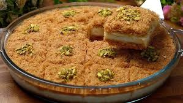

Khunafa

Recipe
Kunafa, also known as Knafeh, is a traditional Middle Eastern dessert renowned for its crispy, buttery layers of shredded phyllo dough encasing a luscious filling of sweet cheese. Often flavored with rose and orange blossom waters, this dessert is finished with a generous pour of aromatic sugar syrup, giving it a delightful sweetness that complements its rich, cheesy interior. Originating from the Levant region, Kunafa has become a beloved treat across various cultures, celebrated for its unique texture and harmonious blend of flavors.
The beauty of Kunafa lies in its simplicity and the balance of contrasting textures and flavors. The crispy exterior provides a satisfying crunch, while the gooey, melty cheese filling offers a comforting richness. This dessert is typically enjoyed warm, allowing the cheese to be perfectly stretchy and the syrup to be fully absorbed, enhancing every bite. Whether served during festive occasions or as an indulgent after-dinner treat, Kunafa never fails to impress with its decadence and delightful taste
Ingredients
For the Syrup:
- 2 cups sugar
- 1 cup water
- 1 tablespoon lemon juice
- 1 tablespoon rose water (optional)
- 1 tablespoon orange blossom water (optional)
For the Khunafa:
- 500g kunafa dough (shredded phyllo dough)
- 1 cup unsalted butter, melted
- 2 cups mozzarella cheese, shredded
- 1 cup ricotta cheese or sweet cheese
Steps
- Prepare the Syrup
- In a saucepan, combine sugar and water. Bring to a boil over medium heat.
- Once boiling, add the lemon juice and reduce the heat. Let it simmer for about 10 minutes until slightly thickened.
- Remove from heat and stir in rose water and orange blossom water if using. Set aside to cool.
- Prepare the Khunafa:
- Preheat your oven to 180°C (350°F).
- In a large bowl, combine the shredded kunafa dough with melted butter. Mix well to ensure the dough is fully coated.
- Divide the buttered kunafa dough into two equal parts.
- Assemble the Khunafa:
- In a baking dish, spread the first half of the kunafa dough evenly.
- Spread the shredded mozzarella cheese and ricotta cheese over the dough layer.
- Cover the cheese layer with the remaining half of the kunafa dough, pressing it down gently.
- Bake the Khunafa
- Bake in the preheated oven for 30-35 minutes, or until the top is golden and crispy.
- Finish the Khunafa
- Remove from the oven and immediately pour the cooled syrup evenly over the hot kunafa.
- Allow it to soak for a few minutes before serving.